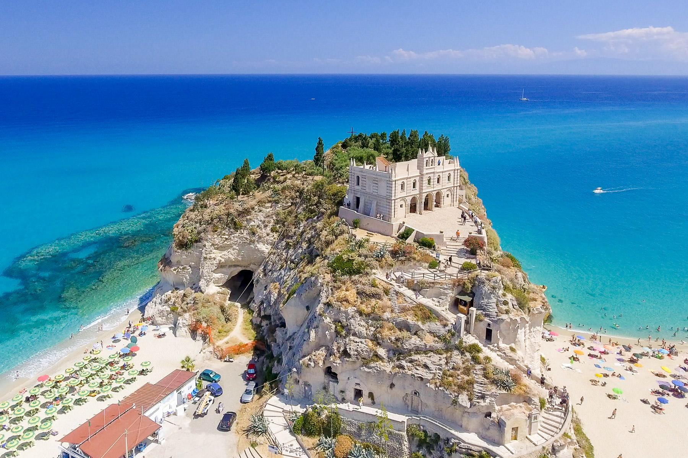

Il clima accogliente, gli splendidi colori del mare, le coste
rocciose alternate a litorali sabbiosi, la sua natura selvaggia e
misteriosa, i sapori intensi e genuini della cucina locale e le
testimonianze delle sue antiche origini rendono la Calabria un posto
unico, da ammirare sia d'inverno che d'estate. Quando si pensa alla
Calabria viene subito in mente il mare e le splendide spiagge dove
crogiolarsi sotto i raggi del sole, grazie agli 800 km di coste
presenti.
Tropea

Soprannominata la Perla del Tirreno, a circa 70 metri sul livello
del mare, Tropea, con le sue mura, le sue torri, le sue porte, la
sua spiaggia sabbiosa e uno stupendo centro storico d'impianto
medievale, resta sicuramente la località turistica calabrese più
nota. Impossibile non ricordare tra i suoi prodotti la cipolla di
Tropea, che, esportata da duemila anni, grazie al suo gusto dolce è
diventata famosa in tutto il mondo. Visita: https://comune.tropea.vv.it/
San Nicola Arcella
San Nicola Arcella è situato sull'orlo di un dirupo scosceso, a 110
metri a strapiombo sul mare con un panorama stupendo che volge lo
sguardo sul golfo di Policastro. La costa è prevalentemente rocciosa e
comprende alcune spiagge incastonate tra le rocce. San Nicola Arcella
è l'inizio del tratto di costa denominato "Riviera dei Cedri" per la
presenza dei frutti caratteristici nella zona.
Definita "la perla dello Ionio",
Soverato è una delle località più belle della costa ionica, e,
rappresenta uno dei poli turistici più importanti della stessa. La
città è caratterizzata da tre zone diverse: la prima fascia urbana si
distribuisce sulla costa, la seconda si allarga in collina e la terza,
la parte più alta della città, rappresenta la Soverato Vecchia.
Soverato gode di un clima mite e gradevole in ogni giorno dell'anno,
grazie ad un insieme di fattori climatici e ambientali unici: un mare
pulitissimo, sole che splende tutto l'anno e splendide spiagge.
Le
Castella è un noto centro turistico della Costa dei Saraceni, compreso
nella Riserva Marina di Capo Rizzuto, in provincia di Crotone. Simbolo
della città è il castello Aragonese del XV secolo posto su un isolotto
collegato alla riva da una sottile lingua di sabbia. La tradizione
racconta dell’esistenza di sette castelli distribuiti in diverse
isolette di un arcipelago, ormai sott’acqua, e sembra che il nome
venga proprio da qui, ricalcando il plurale neutro latino medievale
castellum, derivato a sua volta da castrum. Una delle isolette,
Ogigia, pare sia stata niente di meno che la dimora di Calipso, come
ci narra Omero, e pare dunque che sia passato di qui Ulisse.
Scilla è un importante centro
turistico della Costa Viola, definita tale per il colore che assumono
le acque in determinate ore della giornata. Il Castello addossato alla
costa, le casette colorate accostate una all'altra, lo Stretto con la
vista della Sicilia fanno di Scilla un paese incantevole. Ricco di
storia e di mistero richiama i miti e le leggende di Ulisse con Scilla
e Cariddi, di Omero e di Dante Alighieri. Il borgo di Scilla ha
origini antichissime riferibili per lo più al periodo della
distruzione di Troia. Il nome è legato alla figura mitologica di
Scilla, una giovane ninfa che rifiutava l'amore di Glauco. Questi si
rivolse alla maga Circe, innamorata di lui, per far cadere la giovane
nelle sue braccia; la maga, offesa per l'affronto subito, avvelenò le
acque, dove la ninfa era solita bagnarsi, trasformandole in un orrendo
mostro dotato di sei teste di cani, che distruggevano tutte le navi
che passavano nello Stretto di Messina.